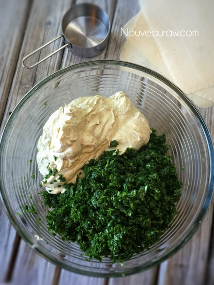
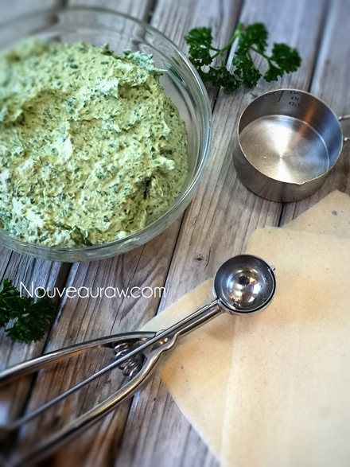
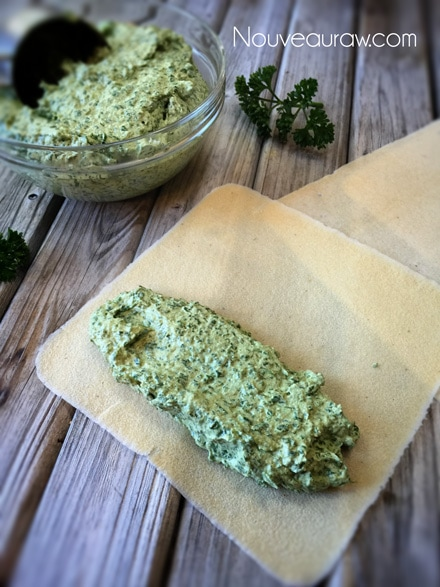
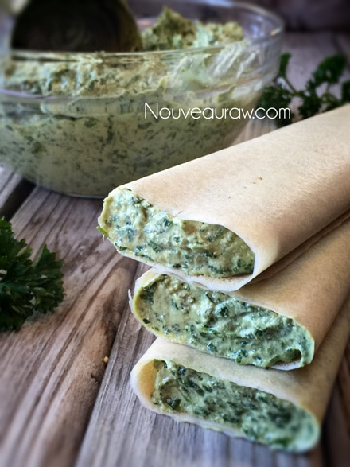
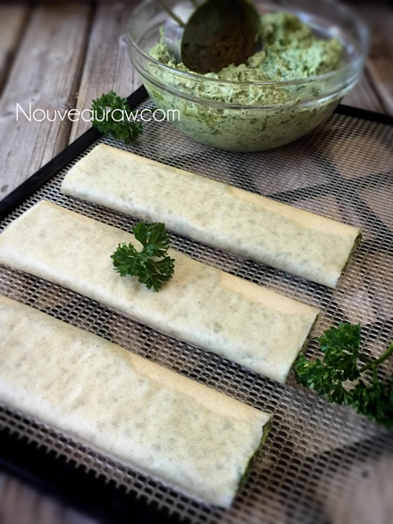
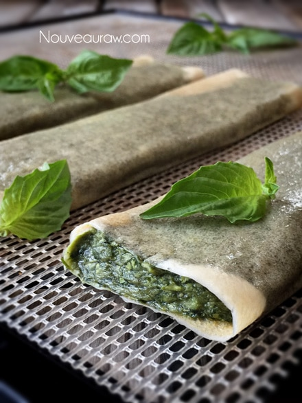
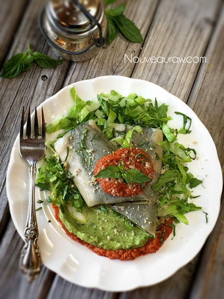
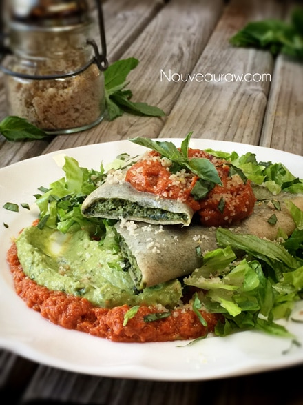

Spinach & Sunflower Cheese Manicotti
~ raw, vegan, gluten-free, nut-free ~
These manicotti coconut wraps are filled with a tasty spinach, basil, and sunflower “cheese.” To build layers of flavor, I plated them on top of a smear of Cilantro Guacamole and Sun-dried Tomato Pesto. I will share the recipes below, but they are optional. I will say that all the flavors really complimented one another and made it a complete dish.
It’s important for me to share that this recipe is very easy to put together. Don’t let the length of my instructions scare you off. If you are used to my recipe postings, you know that I do my best to explain things in detail to help you to get the same results that I share in my photos.
Instead of using pasta for the manicotti, I used raw coconut wraps. Below, you will see how you can make your own, or you can purchase already made ones, which is what I did this time. Once dehydrated you can’t even detect any coconut flavor, so don’t be put off by that. The beauty of using coconut wraps is that you can either hold them in your hands, eating them like a burrito or you can fancy them up on a plate as they are fork-tender.
You could enjoy these without dehydrating them but they are much better after they have “cooked” for 4-6 hours. This slightly softens the wrap, it enhances the flavors of the “cheese” filling and provides you with a warm dinner. :) I hope you enjoy this recipe. Blessings, amie sue
yields 6 (1/2 cup each)
Spinach & Sunflower Cheese:
- 2 cups raw sunflower seeds, soaked
- 1/2 cup + 2 Tbsp water
- 1/2 cup lemon juice
- 1/4 cup nutritional yeast
- 1 Tbsp raw chickpea miso
- 1 Tbsp raw coconut vinegar
- 1 1/2 Tbsp Italian Seasoning
- 3 small cloves garlic
- 1/2 tsp Himalayan pink salt
- 8 cups baby spinach
- 1/2 cup fresh basil
Coconut wraps:
- 2 cups young Thai coconut meat
- 1 1/2 cups coconut water
- 1/4 tsp Himalayan pink salt
- OR use store-bought raw coconut wraps (here)
Sun-Dried Tomato Pesto: (optional)
- 2 cups diced, fresh tomatoes
- 1 cup sun-dried tomatoes
- 1/4 cup water
- 3 Tbsp cold-pressed olive oil
- 1 Tbsp raw coconut vinegar
- 2 tsp balsamic vinegar
- 2 tsp dried oregano
- 1 tsp maple syrup
- 1 small garlic clove
- 10 large basil leaves
(optional)
Preparation:
Spinach & Sunflower Cheese:
- After soaking the sunflower seeds, drain and discard the soak water. Place the sunflower seeds in a high-powered blender.
- Soaking the sunflower seeds not only softens them for blending but also reduces the phytic acid which makes digesting them easier.
- If you already have soaked/dehydrated seeds, you don’t have to re-soak them unless you don’t have a high-powered blender, then I would soak them once more to soften them for blending purposes.
- Add the water, lemon, nutritional yeast, miso, seasoning, garlic, and salt. Blend until creamy. Place in a large mixing bowl.
- If you own a Vitamix, you will want to use the tamper to help push the ingredients into the blades.
- If you don’t own a high-powered blender, you will need to stop the machine often to scrape the sides, pushing the mixture into the blades.
- In a food processor, fitted with an “S” blade, process the spinach and basil in two batches, pulsing it to breakdown but not purée it. Add to the bowl with the sunflower cheese and mix well.
Coconut wraps:
- You can purchase raw coconut wraps (here) if you are short on time or resources.
- To make homemade wraps: Place the coconut meat, water, and salt in the blender. Blend until creamy smooth; you don’t want it lumpy or gritty.
- Pour the batter onto the non-stick sheet that comes with the dehydrator. Spread it evenly across the sheet into one large square. You will cut it into quarters after it has dried.
- Dry at 115 degrees (F) for roughly 4 hours or until it is dry enough to peel off. Flip over onto the mesh sheet and dry for about 1 hour or until it isn’t tacky to touch.
- Store in a large zip-lock bag, placing parchment paper in between each piece.
Assembly & dehydration:
- Lay a coconut wrap on the countertop, place 1/2 cup of the cheese filling on one end of the wrap.
- Fold the wrap over and roll into a tube.
- Gently flatten, pressing the filling towards the edges.
- Place the manicotti on the mesh sheet that comes with the dehydrator.
- Dry at 145 degrees (F) for 1 hour, then reduce to 115 degrees (F) for 4-18 hours.
- I realize that is quite the time span… remove them when the timing is right for you. The dry time develops a deeper flavor and cooked appearance.
- If you don’t have a dehydrator, you can eat them as is. I find the drying process develops a deeper and richer flavor. You can also warm them on your stove, just be careful that you don’t get them too hot. Use your fingertips as a temp gauge or use a real thermometer to monitor it.
- Enjoy warm with your favorite condiments!
- Store leftovers in the fridge for 5-7 days. OR wrap in freezer-paper, slide into a freezer-safe ziplock bag and freeze for a month.
Optional components to the dish:
Sun-Dried Tomato Pesto
- I used sun-dried tomatoes that were not soaked in oil. If you don’t have a high-powered blender such as a Vitamix or Blendtec, I recommend re-hydrating the dried tomatoes in enough water to cover them. Let them sit for about 15 minutes or until soft.
- Drain the excess water from them when ready to use.
- You can use the soak water in place of the plain water.
- Place the tomatoes, water, olive oil, vinegar, oregano, maple syrup, garlic, and basil leaves, blending until smooth.
- You can hold off on the maple syrup, taste testing to see if it is needed or desired.
- Store leftovers in the fridge for 2-3 days.
The Institute of Culinary Ingredients™
- If you are new to using Nutritional Yeast, click (here).
- What is Himalayan pink salt and does it really matter? Click (here) to read more about it.
- What is miso? Click (here) to learn more about it.
Culinary Explanations:
- When working with fresh ingredients, it is important to taste test as you build a recipe. Learn why (here).
- Don’t own a dehydrator? Learn how to use your oven (here). I do however truly believe that it is a worthwhile investment. Click (here) to learn what I use.





After dehydrating…



© AmieSue.com